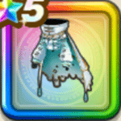

グレーメのローブ上
攻略班 10点 / ギラ属性耐性+5%イオ属性耐性+5%ギラ属性耐性+5%メラ属性耐性+5%スキルの斬撃ダメージ+7%右隣のキャラクターの全属性ダメージ+2%【晴れ】ジバリア属性斬撃・体技ダメージ+3%【雨/雪】ヒャド属性斬撃・体技ダメージ+3%ジバリア属性斬撃・体技ダメージ+8%ヒャド属性斬撃・体技ダメージ+7%
くわしい特徴
【レベル別習得スキル】 Lv1ギラ属性耐性+5% Lv5イオ属性耐性+5% Lv8スキルの斬撃ダメージ+7% Lv10右隣のキャラクターの全属性ダメージ+2% Lv12【晴れ】ジバリア属性斬撃・体技ダメージ+3% Lv12【雨/雪】ヒャド属性斬撃・体技ダメージ+3% Lv15ジバリア属性斬撃・体技ダメージ+8% Lv18ヒャド属性斬撃・体技ダメージ+7% Lv20ギラ属性耐性+5% Lv23すばやさ+6 Lv25メラ属性耐性+5% 【限界突破スキル】 1凸攻撃力+12 2凸すばやさ+12 3凸守備力+12 4凸さいだいHP+12